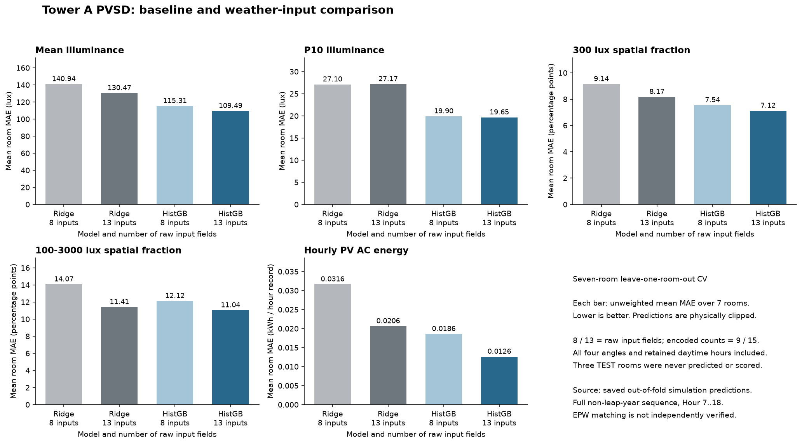
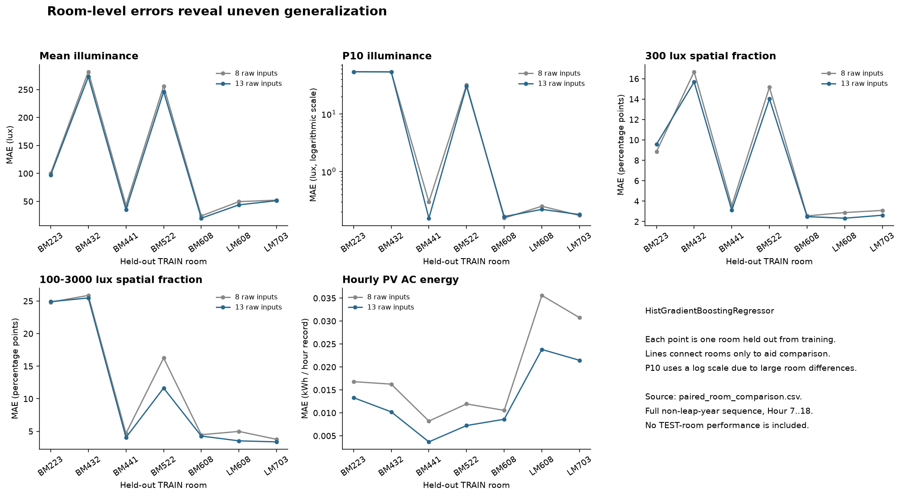
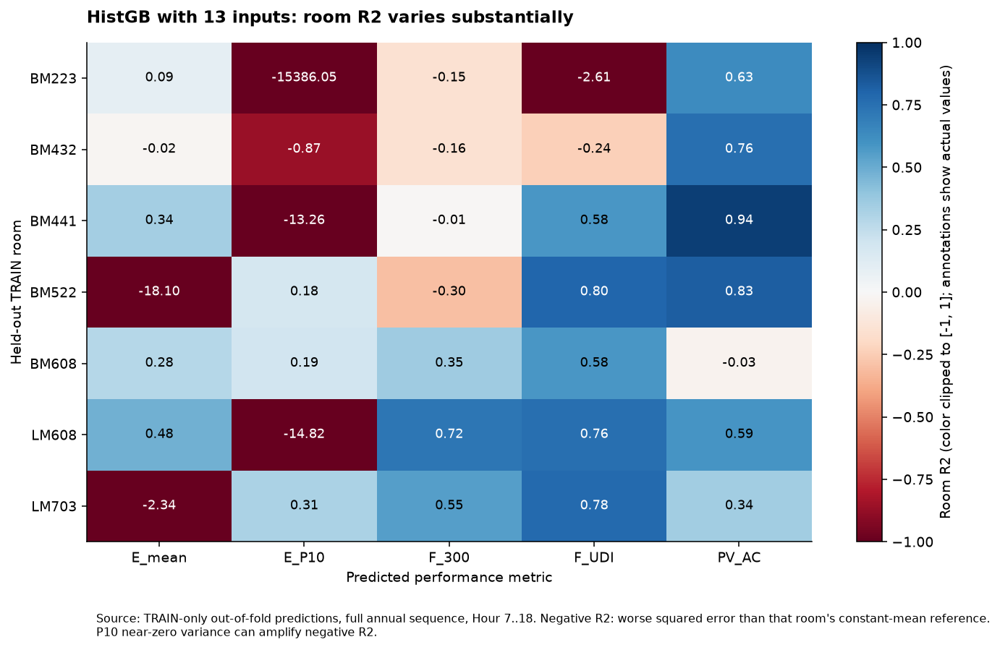

含天气的梯度提升树降低了 PV 平均 MAE；采光在部分未见房间上的预测仍然不稳定。
每次使用 6 个房间训练，剩余 1 个房间验证。8 个基础输入与 13 个含天气输入分别比较，周期编码后为 9 和 15 列。五个输出分别训练；固定参数，没有调参或全 7 房间最终重训。
| 指标 | 8 输入 MAE | 13 输入 MAE | 单位 | MAE 降低 | 改善房间 |
|---|
MAE 为 7 个房间各自 MAE 的等权平均，越低越好。正的降低百分比表示改善。比例误差换算成百分点。主结果截断负预测为 0、比例为 0–1；未截断结果也已保存在 CSV 和 Parquet 文件中。
| 留出房间 | 8 输入 MAE | 13 输入 MAE | MAE 降低 | 13 输入 RMSE | 13 输入 R² | 截断比例 |
|---|
R² 为负，表示该房间的预测平方误差超过以该房间均值为参考的误差。P10 在部分房间内变化很小，会放大负 R²；需要结合 MAE 和 RMSE 判断。
梯度提升树的 PV MAE 从 0.01858 降至 0.01261 kWh，下降 32.1%，7 个房间全部改善。平均照度 MAE 下降 5.0%，300 lux 空间比例误差下降 5.6%，适宜照度空间比例误差下降 9.0%。
这些是开发交叉验证结果。平均照度和 P10 的平均 RMSE 没有改善；BM223 的 P10 和 BM522 的平均照度仍存在明显迁移失败。尚不能判断整栋楼预测或动态角度推荐已可靠。



下一步先检查上述房间的几何、窗口位置、传感器网格及数据生成过程，再确定下一轮特征或目标处理。保持三个 TEST 房间独立，不根据它们调参。天气文件来源、小时对齐和地理北仍未确认。